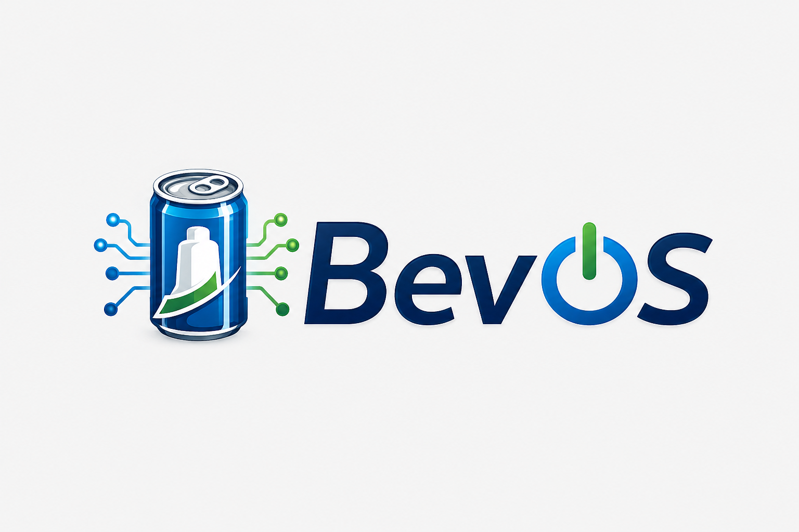
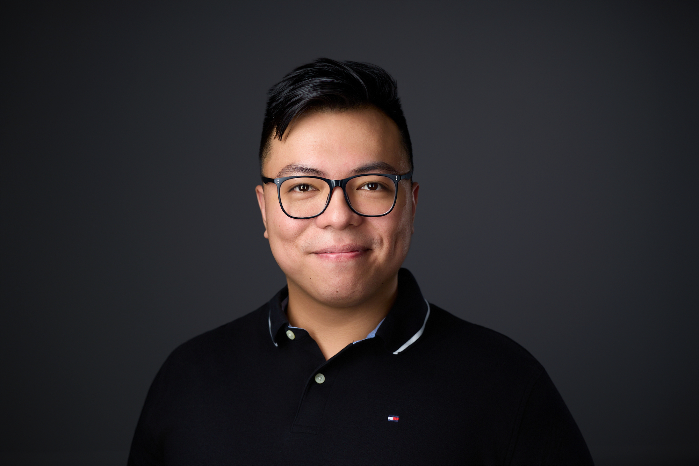
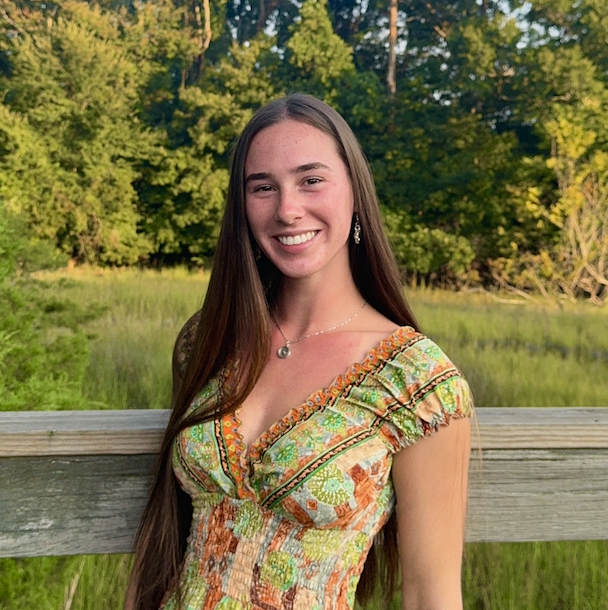
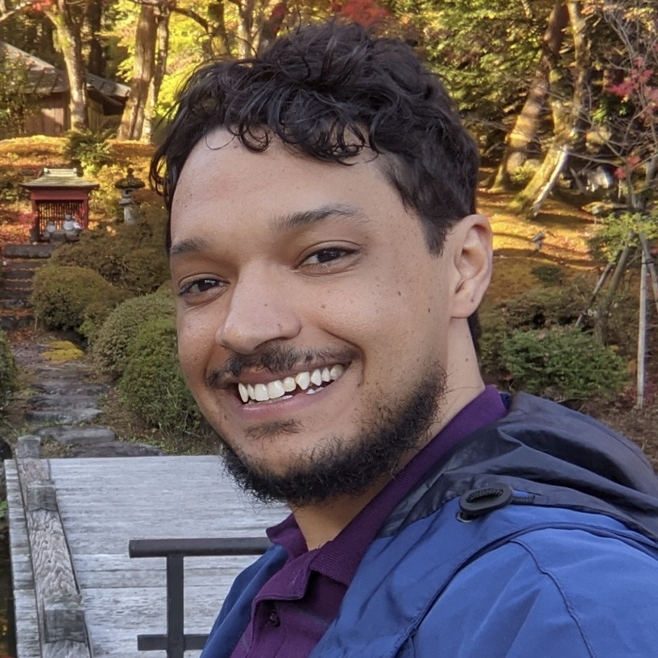
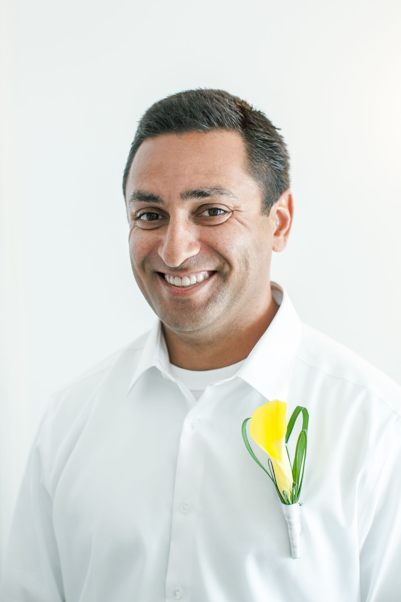
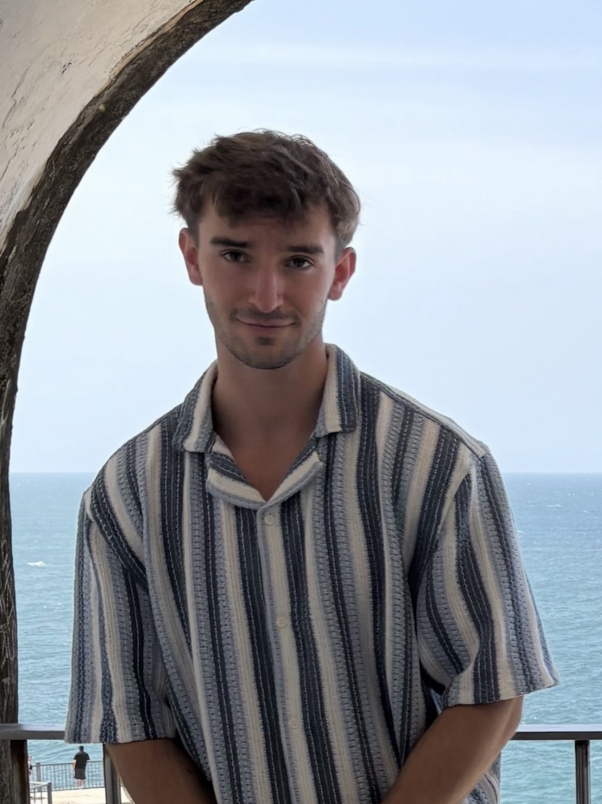
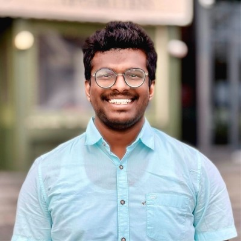

Phillip is a senior at Old Dominion University, currently in the final year of his Bachelor of Science in Computer Science. He is a U.S. Navy veteran with 10 years of service, leveraging his experience and professional network toward his goal of becoming a software engineer. He is currently working as a consultant with the Systems Group, which maintains the infrastructure for the university's Comptuer Science department.
Amber is a senior at Old Dominion University pursuing a Bachelor of Science in Computer Science with a minor in Cybersecurity. She currently works as a Systems Administrator contractor supporting enterprise technology services and troubleshooting technical issues. Her interests include software engineering, cybersecurity, and system administration. Upon graduation, she plans to pursue a career focused on building secure and innovative technology solutions.

Jeweliana is a senior at Old Dominion University, currently completing the final semesters of her Bachelor of Science in Computer Science. She currently works as a personal trainer and helps manage a gym. Upon graduation she plans to pursue a career that focuses on building applications and using technology in the fitness industry to make health and wellness more accessible.

Julien is a senior at Old Dominion University aiming to graduate with a Bachelor of Science in Computer Science this coming fall. He aims for a career combining interests in machine learning, cognitive science, and philosophy with a broad desire to improve upon the capabilities of computer technologies as tools for furthering development of the human mind.

Matthew is a senior at Old Dominion University pursuing a Bachelor of Science degree in Computer Science with a minor in Cybersecurity. He currently works as a Web Developer at MotoAmerica. Upon completing his degree, Matthew hopes to pursue a career as a cybersecurity engineer, helping organizations defend against emerging threats, including those posed by malicious uses of artificial intelligence.

Ryan is a senior at Old Dominion University, graduating in December 2026 with a Bachelor of Science in Computer Science. After graduation, he plans to pursue a career in Richmond with his degree.
